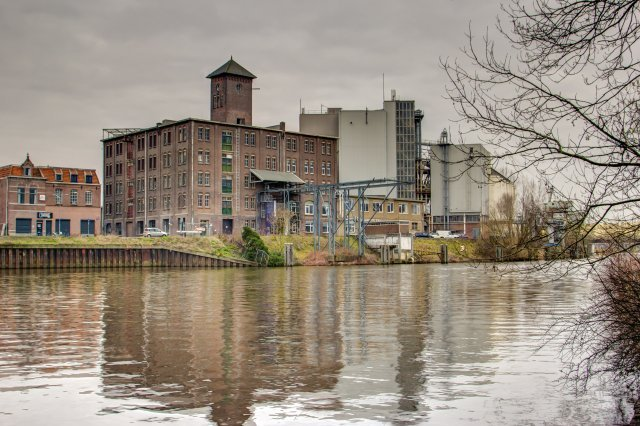

RABO NEXT Stage Jazz Orchestra
Jazz Orchestra
- Dag
- vrijdag
- Begin
- 21:45
- Einde
- 22:30
- Soort
- Demo
- Locatie
- Mengers
RABO NEXT Stage Jazz Orchestra
Het RABO NEXT Stage Jazz Orchestra is het coachingstraject vanuit het Utrechtse TivoliVredenburg. De deelnemers gaan een jaar lang flink aan de bak met repetities en concerten. De groep onder leiding van Jeroen Doomernik heeft zich met name laten inspireren door bands als Steps Ahead, John Scofield, Brecker Brothers an Pat Metheny.
De Jazzwerkplaats heeft een puik live-programma van 19:30u tot 00:00u met in het eerste deel optredens van de bands JazzAcademy, KETJAP en het RABO NEXT Stage Jazz Orchestra. In het tweede deel van de avond is er een te gekke afsluitende jazzsessie waarin we veel jonge muzikanten zullen horen en zien die nu ook studeren aan de diverse conservatoria opleidingen.
RABO NEXT Stage Jazz Orchestra zijn:
Bram van de Glind – trompet
Jan Lobee – tenorsax
Naut de Bruin – piano
Gerrit van Balen – gitaar
Tom Bouwmeister - gitaar
Yaresh Soekhlal – basgitaar
David Mathas - drums
 Mengers
Mengers

Barkade Da Silva Jazzwerkplaats
In de mengfabriek van Koudys werden vroeger ingrediënten van veevoeder gemengd. Tegenwoordig mengen ondernemers er hun kennis en innovaties, kunstenaars hun verf en dj’s hun plaatjes.
“In de Mengfabriek wordt gewerkt aan een circulaire toekomst zonder uitstoot en afval. Dans, muziek, kunst en feest maken daar met klem deel van uit. Samenwerken is hier het motto, wat heb jij in te brengen?”